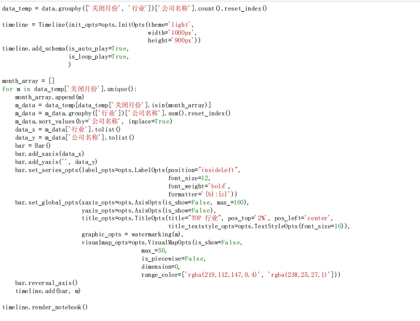

The Game Of 2021.12.01
任务启动
1 | #导入常规库 |
任务1：数据读取
- 载入 company.csv 文件，数据路径为 ../data/company.csv
- 结果以变量 data 保存
1
2data = pd.read_csv("../data/company.csv")
data
任务2：数据处理
2-1 查找缺失值
查找关闭原因字段缺失值，具体要求如下：
- 将其索引查找出来
- 结果以变量 index 保存
1
2index = data[data.isnull().T.any()].index.values
int(index)
2-2
增加区域字段，具体要求如下：
- 将地点字段里的数据对应到相应的区域。对应关系如下:
- 华北地区: 北京, 天津, 河北, 山西, 内蒙古
- 华东地区: 上海, 江苏, 浙江, 安徽, 福建, 江西, 山东
- 东北地区: 辽宁, 吉林, 黑龙江
- 中南地区: 湖北, 湖南, 河南, 广东, 广西, 海南
- 西南地区: 四川, 重庆, 贵州, 云南, 西藏
- 西北地区: 陕西, 甘肃, 新疆, 青海, 宁夏
- 港澳台地区: 香港, 澳门, 台湾
1
2
3
4
5
6
7
8
9
10
11
12
13
14
15
16
17
18
19
20
21
22
23
24
25
26
27
28
29
30data['区域'] = np.nan
data
huabei = ['北京', '天津', '河北', '山西', '内蒙古']
huadong = ['上海', '江苏', '浙江', '安徽', '福建', '江西', '山东']
dongbei = ['辽宁', '吉林', '黑龙江']
zhongnan = ['湖北', '湖南', '河南', '广东', '广西', '海南']
xinan = ['四川', '重庆', '贵州', '云南', '西藏']
xibei = ['陕西', '甘肃', '新疆', '青海', '宁夏']
gangaotai = ['香港', '澳门', '台湾']
def where_quyu(quyu):
if quyu in huabei:
return "华北地区"
elif quyu in huadong:
return "华东地区"
elif quyu in dongbei:
return "东北地区"
elif quyu in zhongnan:
return "中南地区"
elif quyu in xinan:
return "西南地区"
elif quyu in xibei:
return "西北地区"
elif quyu in gangaotai:
return "港澳台地区"
else:
return np.nan
for i in range(0, len(data)):
data.loc[i, "区域"] = where_quyu(data[data.index == i].地点.values[0])
data
2-3
增加关闭月份字段，具体要求如下：
- 处理关闭时间字段，提取年-月信息。例如将2021-02-19处理为2021-02。
1
2
3
4data["关闭月份"] = np.nan
for i in range(0, len(data)):
data.loc[i, "关闭月份"] = data[data.index == i].关闭时间.values[0][0:-3]
data
2-4
增加关闭季度字段，具体要求如下：
- 处理关闭时间字段，提取季度信息。例如将2021-02-19处理为1。
1
2
3
4
5
6
7
8
9
10
11
12
13
14
15
16
17data['关闭季度'] = np.nan
def deal_data(time):
com = int(time[5:])
if com in [1, 2 ,3]:
return 1
elif com in [4, 5, 6]:
return 2
elif com in [7, 8, 9]:
return 3
elif com in [10, 11, 12]:
return 4
else:
return np.nan
for i in range(0, len(data)):
data.loc[i, "关闭季度"] = int(deal_data(data[data.index == i].关闭月份.values[0]))
data = data.astype({'关闭季度': int})
data
2-5
处理关闭原因字段，具体要求如下：
- 查找出倒闭原因之最。
- 结果以变量reason_top1保存
1
2
3
4
5
6
7
8reason = data.关闭原因.tolist()
# print(type(reason))
text = '、'.join(str(i) for i in reason)
data_text = text.split("、")
dt = pd.DataFrame(data_text)
dt.columns = ['倒闭原因']
reason_top1 = dt.倒闭原因.value_counts().head(1).index[0]
reason_top1
2-6
增加存活年限字段，具体要求如下：
- 划分存活年限，划分7个等级
- 半年：0天 - 180天
- 一年：181天 - 365天
- 两年：366天 - 730天
- 三年：731天 - 1095天
- 四年：1096天 - 1460天
- 五年：1461天 - 1825天
- 五~十年：1826天 - 3650天
- 十年以上：3651天 - …
1 | data["存活年限"] = np.nan |
任务3：数据可视化
3-1
统计行业标签，以词云图展示。
- 图形类别正确（0.5分）
- 词云图形状为tags。（0.5分）
- 词云图词频正确。（1分）
1
2
3
4
5
6import stylecloud
from IPython.display import Image
stylecloud.gen_stylecloud(text=''.join(data.行业标签.values), collocations=False, icon_name='fas fa-tags',size=400,font_path="/home/ec2-user/jupyter/data/SimHei.ttf", output_name='词云图.png')
# font_path= '/usr/local/share/',
Image(filename="词云图.png")
3-2
统计关闭行业，以条形图展示。
- 图形类别正确。（1分）
- 标题居中，x轴标签旋转-30度。（0.5分）
- 数值正确。（1分）
1
2
3
4
5
6
7
8
9
10
11
12
13
14
15from pyecharts.charts import Bar
data_xingye = data[['公司名称', '行业']].drop_duplicates()
count_xingye = data_xingye.行业.value_counts()
x = count_xingye.index.tolist()
y = count_xingye.tolist()
bar1 = (
Bar(init_opts= opts.InitOpts(width="100%"))
.add_xaxis(x)
.add_yaxis('', y, itemstyle_opts=opts.ItemStyleOpts(color="#ff5058"))
.set_global_opts(title_opts=opts.TitleOpts(title='关闭行业统计', pos_left="40%"),
xaxis_opts=opts.AxisOpts(
axislabel_opts=opts.LabelOpts(rotate=-30)))
)
bar1.render_notebook()
3-3
制作倒闭公司季度分布图，以玫瑰图展示。
- 图形类别正确。（1分）
- 标签数值正确，格式正确。数值保留2位小数，示例：一季度: 2.18%（1分）
1
2
3
4
5
6
7
8
9
10
11
12
13
14
15
16
17
18
19from pyecharts.charts import Pie
data_jidu = data.关闭季度.value_counts()
data_jidu
data_ji = [['一季度', 453],
['二季度', 480],
['三季度', 55],
['四季度', 22]]
pie1 = (
Pie()
.add(
series_name="倒闭公司季度分布图",
data_pair=data_ji,
rosetype="area",
radius=['50%', '80%']
)
.set_global_opts(title_opts=opts.TitleOpts(title="倒闭公司季度分布"))
.set_series_opts(label_opts=opts.LabelOpts(formatter="{b}: {d}%"))
)
pie1.render_notebook()
3-4
统计各行业平均存活天数，以象形图展示。
- 图形类别正确（1分）
- 数值正确（0.5分）
- 数值居右（0.5分）
1
2
3
4
5
6
7
8
9
10
11
12
13
14
15
16
17
18
19
20
21
22
23
24
25
26
27
28
29
30
31
32
33
34from pyecharts.charts import PictorialBar
from pyecharts.globals import SymbolType
data_cunhuo = data[['行业', '存活天数']]
data_cunhuo_maen = data_cunhuo.groupby('行业').mean()
data_cunhuo_maen = data_cunhuo_maen.sort_values(by="存活天数", ascending=True)
data_cunhuo_x = data_cunhuo_maen.index.tolist()
data_cunhuo_y = data_cunhuo_maen.存活天数.tolist()
data_cunhuo_y = [int(i) for i in data_cunhuo_y]
data_cunhuo_y
pictoriabar1 = (
PictorialBar()
.add_xaxis(data_cunhuo_x)
.add_yaxis("",
data_cunhuo_y,
label_opts=opts.LabelOpts(is_show=True, position="right"),
symbol_size=18,
symbol_repeat="fixed",
symbol_offset=[0, 0],
is_symbol_clip=True,
symbol=SymbolType.ROUND_RECT,)
.reversal_axis()
.set_global_opts(title_opts=opts.TitleOpts(title="各行业平均存活天数"),
xaxis_opts=opts.AxisOpts(is_show=False),
yaxis_opts=opts.AxisOpts(
axistick_opts=opts.AxisTickOpts(is_show=False),
axisline_opts=opts.AxisLineOpts(
linestyle_opts=opts.LineStyleOpts(opacity=0)
)
))
)
pictoriabar1.render_notebook()
3-5
统计电商行业不同公司寿命的个数和倒闭率。寿命以条形图展示，倒闭率以折线图展示。倒闭率以叠加方式展示，从最低寿命开始叠加，一直叠加到1。
注：公司寿命直接以年为单位计算，如2018-02-18到2019-01-01，则统计为1年。
- 图形类别正确。（0.5分）
- 图形背景为黑色。（0.5分）
- 条形图数值正确，条形图颜色红绿渐变。（0.5分）
- 折线图走势正确，不显示数值。（0.5分）
1
2
3
4
5
6
7
8
9
10
11
12
13
14
15
16
17
18
19
20
21
22
23
24
25
26
27
28
29
30
31
32
33
34
35
36
37
38
39
40
41
42
43
44
45
46
47
48
49
50
51
52
53
54
55
56
57
58
59
60
61
62
63
64
65
66
67
68
69
70
71from pyecharts.charts import Bar, Line
data['公司寿命'] = ''
for i in range(0, len(data)):
data.loc[i, "公司寿命"] = int(data[data.index == i].关闭时间.values[0][0:4]) - int(data[data.index == i].成立时间.values[0][:4])
data = data.astype({'公司寿命': int})
# data_groud = data.groupby('行业')
data_groud = data[['行业', '公司寿命']]
data_groud = data_groud.groupby('行业')
data_groud.sum().sort_values(by='公司寿命')
data_groud['公司寿命'].value_counts().sort_values()
data_shouming = data[data['行业'] == '电子商务']['公司寿命'].value_counts()
print(data_shouming[data_shouming.index.sort_values().tolist()].tolist())
data_num = data_shouming[data_shouming.index.sort_values().tolist()].tolist()
print(type(data_num))
num = 0
for i in data_num:
num += i
print(num)
list_num = [i/num for i in data_num]
print(list_num)
list_num_end = []
sum = 0
for i in list_num:
sum += i
list_num_end.append(sum)
bar = (
Bar(init_opts=opts.InitOpts(theme='dark'))
.add_xaxis(data_shouming.index.sort_values().tolist())
.add_yaxis('不同寿命的公司个数',
data_shouming[data_shouming.index.sort_values().tolist()].tolist(),
# markline_opts=opts.MarkLineOpts(is_silent=False, data={"name": "dafg"}),
itemstyle_opts=opts.ItemStyleOpts(color={"type":"linear", "x": 0, "y":0, "x2":0, "y2": 1,
"colorStops": [{"offset": 0, "color": '#ef6046'},
{"offset": 1, "color": '#2baea4'}]}),
)
.extend_axis(
yaxis=opts.AxisOpts(
name = "倒闭率",
# type_ = "float",
position="right"
)
)
.set_global_opts(title_opts=opts.TitleOpts(title="电商行业"),
yaxis_opts=opts.AxisOpts(name="不同寿命的公司个数"))
)
line_x = data_shouming.index.sort_values().tolist()
line =(
Line()
.add_xaxis(['1', '2', '3', '4', '5', '6', '7', '8', '9', '10', '12', '13', '14', '16'])
.add_yaxis(
"倒闭率",
list_num_end,
yaxis_index=1
)
.set_series_opts(label_opts=opts.LabelOpts(is_show=False))
.set_global_opts(yaxis_opts=opts.AxisOpts(position="right"),
title_opts = opts.TitleOpts(title="电商行业")
)
)
# line.render_notebook()
bar.overlap(line)
bar.render_notebook()
3-6
统计不同融资情况的比例，以环形图展示。
- 图形类别正确。（0.5分）
- 标签数值正确，数值保留2位小数。示例：天使轮: 2.18%（1分）
- 颜色渐变。（0.5分）
1
2
3
4
5
6
7
8
9
10
11
12
13
14
15
16
17
18
19
20
21
22
23
24
25
26
27
28
29
30
31
32
33
34
35# from colour import Color
# red = Color("lightgreen")
# colors = list(red.range_to(Color("green"),18))
# colors
# # colors is now a list of length 10
# # Containing:
# # [<Color red>, <Color #f13600>, <Color #e36500>, <Color #d58e00>, <Color #c7b000>, <Color #a4b800>, <Color #72aa00>, <Color #459c00>, <Color #208e00>, <Color green>]
data3 =data.获投状态.value_counts()
data3
list_data = [i for i in zip(data3.index.tolist(), data3.tolist())]
list_data
p = (
Pie(init_opts=opts.InitOpts(
theme='white'
))
.add(
'',
list_data,
radius=['50%','80%'],
itemstyle_opts=opts.ItemStyleOpts(border_type="daas")
)
# .set_colors(['#f9f9f9', '#7fbdaa', '#70b7a1', '#008866', ''])
.set_global_opts(
title_opts=opts.TitleOpts(title='融资情况',pos_bottom="47%", pos_left="45%"),
legend_opts=opts.LegendOpts(
orient='1',
pos_top='10%',
pos_left='right'
)
)
.set_series_opts(label_opts=opts.LabelOpts(formatter="{b}: {d}%"))
)
p.render_notebook()
3-5 3-6
3-5
1 | data['公司寿命'] = '' |
3-6
1 | data3 =data.获投状态.value_counts() |

本博客所有文章除特别声明外，均采用 CC BY-NC-SA 4.0 许可协议。转载请注明来自 Waite's Blog！

评论